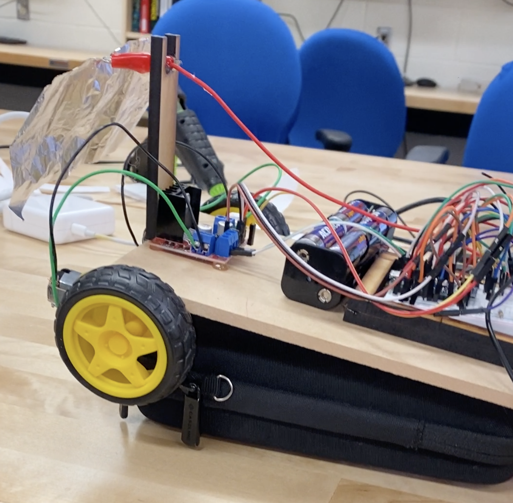
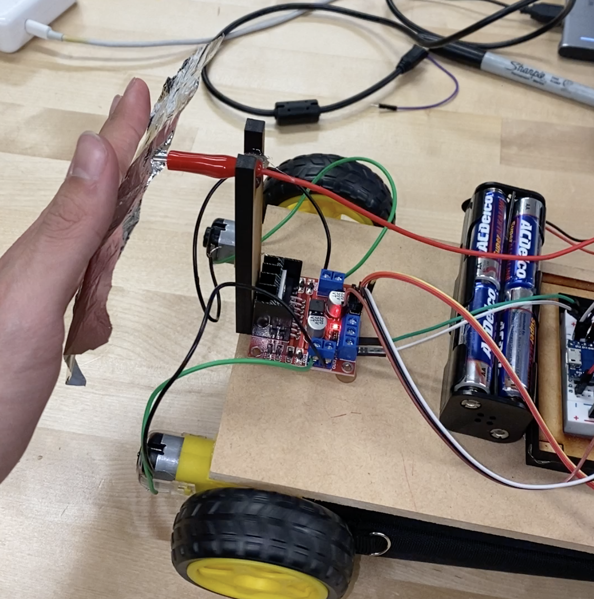

Light Following Robot
 Intro
Robot that follows light and avoids obstacles. Picture on the right shows the robot.
Summary
This is a robot that can follow light and not hit obstacles based on capacitive sensors and photodiode inputs. I had to utilize extensive knowledge of operational amplifliers (Op amps), circuit design, servo motors, state machines, arduino, C programming language, H-bridges, analog inputs, PWM outputs, and battery voltage tracking.
 Picture on the left shows aluminum foil used for capacitive sensor.Future Iteration/Improvements
Future iterations of this might include a remote control to allow for more eplicit control. Alternatively future iterations could include additional photodiodes to allow for 360 degree light detection. I could also add radar sensors instead of capacitve sensors to increase the obstacle avoidance detection range.